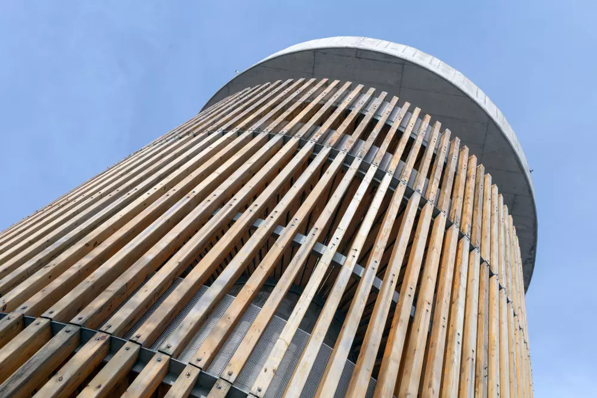

Pilis-tető
Az utazás a Pilis tetőre egy emlékezetes kaland, hiszen a hegység gazdag élővilággal és változatos tájjal büszkélkedik. Az erdei ösvények és turistaútvonalak csodálatos kilátást nyújtanak a környező tájra, valamint lehetőséget kínálnak a madármegfigyelésre és a vadon élő állatok nyomait kutatva. A Pilis tetőről lenyűgöző panoráma nyílik Budapestre és környékére. A kilátóból csodálhatjuk a várost, amely a Dunával és az épületeivel együtt különleges látványt nyújt. A naplemente vagy a hajnal idején felkeresve a Pilis tetőt, varázslatos színekben pompázik a táj, és az ember elmerülhet a természet nyugalmában. A Pilis tető környékén számos pihenőhely és turistaház található, ahol a kirándulók pihenhetnek, frissíthetik magukat, vagy akár éjszakázhatnak is. A hegység egész évben kiváló lehetőségeket kínál a túrázásra, a kerékpározásra és a természet közelségének élvezetére. Összességében a Pilis tető egy igazi gyöngyszem a Pilis-hegységben, amelynek felfedezése során az ember testileg és lelkileg is feltöltődhet a természet csodáival és a gyönyörű kilátással. Legyen szó egy rövid kirándulásról vagy egy hosszabb túráról, a Pilis tető mindenképpen emlékezetes élményeket nyújt minden látogatónak.
Zsitvay-kilátó
Az MTSZ korábbi elnökéről, az igazságügyi miniszterként is ismert Zsitvay Tiborról nevezték el ezt az emblematikus kilátót. 1933-ban építették a 378 méter magas Nagy-Villám tetején a természetjárók ezt a 2005-ben műemlékké nyilvánított, kőből épült kilátót, ami azóta a térségi turistaélet egyik központjává vált. Az építményt eredetileg Jubileumi kilátónak nevezték, amely a Magyar Turista Szövetség megalakulásának 20 éves évfordulójára utalt. A tervezők igyekeztek szem előtt tartani a visegrádi vár és a Salamon-torony jellegzetességeit, így teremtve összhangot az építmények között. A legfelső teraszt csigalépcsőn lehet elérni, onnan körpanoráma tárul elénk. A felső szintről Budapestet és környékét fedezhetjük fel, de tiszta időben akár száz kilométerre is elláthatunk. A Mátrától a Pilisig és a Zsámbéki-medencéig csodálhatjuk a panorámát. Ennek legszebb szelete a karnyújtásnyira lévő Fellegvár, amely ilyen szögből, azonos magasságból máshonnan nem nézhető meg. Egy emelettel lejjebb pár trófea társaságában kis tárlat ismerteti a közelben fellelhető természeti értékeket. A látnivalókról a kilátó kilátószintjén kihelyezett ábrák és feliratok is tájékoztatnak. A kilátó közelében pihenőhely, sétautak, alpesi és nyári bobpálya, mini golfpálya és étterem található.
Dömörkapui vízesés
A kőbányászat oltárán feláldozott szurdok utolsó darabkája, egy kis kőzetlépcső töri meg a Bükkös-patak útját. A zúgó a Visegrádi-hegység szimbolikus kapuja, ahol a patak látványosan búcsúzik az őt tápláló hegyektől. Dömörkapu domborzata több jellemzőjében is magán viseli az emberi kéz nyomát. A Bükkös-patak egészen a 20. század elejéig mély szurdokon törte át a tömör andezitet, és kb. 6-7 méter magas vízesés formájában lépett ki a szorosból. Az 1920-as években nyitott kőfejtők, valamint az autóút megépítése szó szerint eltüntette a szurdokot, de a vízesés alsó lépcsője - amolyan zúgóként - máig látható. A híd mellett, jobbra, lent nagyjából kockásra szabdalt kőzetlépcsőn csobog a patak - amint alábukik, örvénylő medencéje bocsátja hegylábi útjára a vizet. Zúgása a köves, helyenként lépcsőzetes mederben a patak nevét is kölcsönözte: hívták Bucsinának, ami különféle szláv nyelveken jelentett zúgást, morajlást, de bükköst is. A szerteszét heverő kőtömbök jelzik, hogy a hegység egyik legfontosabb vízfolyása komoly erőt képes kifejteni - főként tavaszi áradásai, villámárvizei során. A Dömör-kapu mindenféle értelemben a Visegrádi-hegység kapuja: a hegyek szélén található, a rajta átvezető út a bércek mélyét veszi célba, buszmegállója és parkolója pedig túrák gyakori kezdő- és végpontja. Ráadásul szorosa miatt tényleg kaput formáz: a Cser-hegy és a Bölcső-hegy lejtőit éppen csak a patak és a feltáróút választja el egymástól. Egyes források szerint szerb, mások szerint török eredetű neve is „vaskaput", „sziklaszorost", mindenesetre valamiféle szűkületet jelöl.